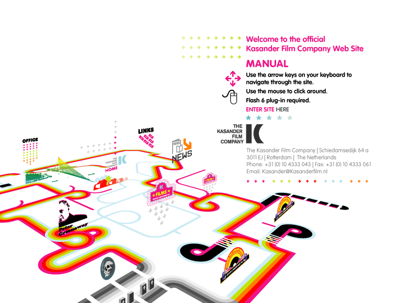

Recognize the approach
Y2K design reflects overlapping visions of a digital future around the millennium.
Look for
- Chrome-like highlights and glossy surfaces
- Capsules, rings, and technical details
- Layered graphics and assertive color
Your learning goal
Describe the visual decisions before choosing a tool. Then make one small example that uses them deliberately.
Next: OriginsWhere it comes from
Y2K design reflects overlapping visions of a digital future around the millennium. Some sites used metallic surfaces and technical type; others were colorful, playful, and translucent.
- Period or influence
- Approximately 1996–2005
- What this label describes
- Period aesthetic
Dates describe broad influences or visibility. Styles overlap and return; this is not a sequence of replacements.
Next: Visual vocabularyRead the visual vocabulary
- 1
Chrome-like highlights and glossy surfaces
- 2
Capsules, rings, and technical details
- 3
Layered graphics and assertive color
Compare the illustration with its neutral version. Notice changes in type, shape, spacing, surface, and emphasis while the core words stay similar.
Review typography terms · Practice choosing type
Next: ExamplesExamples and historical references

- Y2K historical collection
Historical website or archive collection.
- Kasander, 2002
Historical website or archive collection.
What to examine
Look at the heading, one control, the image treatment, and the reading order. Explain which decisions establish the style and which make the page usable.
Next: ConstructionHow to construct it
- Build precise shapes as SVG and create metallic treatments through gradients or painted assets.
- Export decorative graphics independently from labels and links. Low resolution alone does not create the aesthetic.
Small practice task
Create a capsule navigation button using three lighting bands, then make its normal and pressed states.
Before you expand it
Test the result at its intended size, on a narrow screen, and with keyboard focus. Preserve editable layers and record the source and license of acquired assets.
Find the tools and tutorials